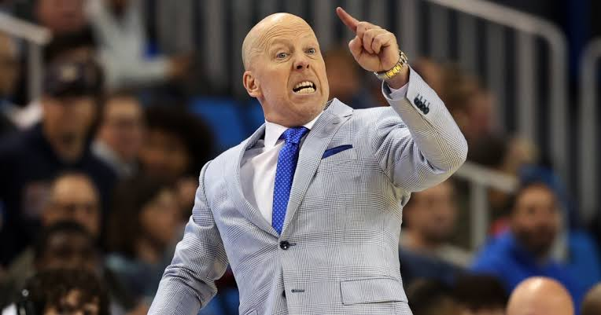
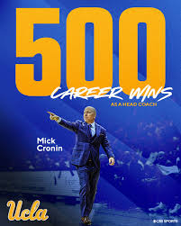

Welcome to the online forum for all things "Mr. 5-foot-3 with an attitude."
Here you will find a biography, images, and postgame press conference clips of the best bald head coach in men's college basketball.
If you don't believe me, check the schedule. UCLA was in struggle town just three weeks ago, and now Cronin has his boys on a heater!
Coach Cronin delivered an angry address to the media following UCLA's 94-75 loss against Michigan in early January. But recently, he's been in much brighter spirits.
Check out some video highlights here.
Coach Cronin impressively reached 500 career wins this past Sunday, after UCLA defeated Ohio State 69-61.
The Bruins have a road test against No. 20 Purdue on Friday, an intriguing matchup against a Boilermakers team that's lost its last four games.